World War I, also known as the Great War and the War To End All Wars, devastated Europe. At its conclusion, the borders of many European countries were changed, new countries were formed, and the Treaty of Versailles, which formally ended the war, planted the seeds that would lead to World War II just 20 years later. However, this war was also famous for introducing a number of technical innovations used widely during warfare for the first time including: airplanes, tanks, submarines, camouflage, and the telephone. And it was also the first time women were recruited for war by both Americans and our British cousins.
Grace Banker’s service as chief operator of the Signal Corps Girls for General Pershing’s American Expeditionary Forces is a singularly American story. She, like thousands of other young women, answered the call for volunteers to serve overseas. Her courage and dedication, working day and night in poor conditions, through air attacks and fires, exemplified the work ethic for which Americans are famous: “Over here a Chief operator has a twenty-four hour job … never spent more time at the office and never enjoyed it more.”
When Grace Banker and her Hello Girls returned from the war, they were denied the benefits that veterans received. Other women who served in World War I, mostly nurses (Army) and clerks (Navy), received honorable discharges and veteran benefits. Although the Hello Girls served closer to the front than most other enlisted women, it took several decades of political fighting before they were awarded the benefits and recognition their service to our country merited. This is yet another example of the “grit” the Hello Girls displayed while serving our country during World War I.

Title: Grace Banker and Her Hello Girls Answer the Call:
The Heroic Story of WWI Telephone Operators
Author: Claudia Friddell
Illustrator: Elizabeth Baddeley
Year Published: 2021
Length: 40 pages
Below is one suggestion for your week with the book Grace Banker and Her Hello Girls Answer the Call. Please experiment with what works for your family! (Note: not all activities are included in the suggested sample week below).
toc: "Songbook: _Over There!_"
time: 5 minutes
freq: daily
Over there, over there Send the word, send the word, over there! That the Yanks are coming! The Yanks are coming! The drums rum-tumming Everywhere! So prepare, say a prayer, Send the word, send the word to beware - We’ll be over, we’re coming over And we won’t come back till it’s over, Over There!
This song was written in 1917 by George M. Cohan, known as the “Man Who Owned Broadway” because of the breadth of his skills as an entertainer – he wrote over 300 songs, appeared in or produced over three dozen Broadway shows. He wrote this song to announce to the world that America was entering World War I and to encourage young American men to volunteer to serve in the expeditionary force being sent “over there” to fight the Central Powers. It is, in one sense, the musical version of the recruitment posters seen in Grace Banker and Her Hello Girls Answer the Call.
While the term Yankees (or Yanks) was applied to northern soldiers during our Civil War, by the time of World War I it was more generally applied to all Americans. The song, and especially the chorus above, became an American standard, renewed in popularity during World War II and, to a more limited extent, for the War on Terror after 9/11. General John J. Pershing led the American Expeditionary Forces “over there.” After the war, inspired by the bands of the European armies we were allied with, he formed the United States Army Band (also known as “Pershing’s Own.”) You can hear Pershing’s Own performing Over There here.
You can also find several other versions on YouTube, including some that feature all the verses. This version (just the chorus) is from the classic movie Yankee Doodle Dandy, featuring James Cagney portraying George M. Cohan himself, as America enters World War II.
time: 5 minutes
freq: daily
In Flanders fields, the poppies blow Between the crosses, row on row, That mark our place; and in the sky The larks, still bravely singing, fly Scarce heard among the guns below.
We are the Dead. Short days ago We lived, felt dawn, saw sunset glow, Loved and were loved, and now we lie In Flanders fields.
Take up our quarrel with the foe: To you from failing hands we throw The torch; be yours to hold it high. If ye break faith with us who die We shall not sleep, though poppies grow In Flanders fields.
In Flanders Fields is the most famous poem written about World War I. Composed in 1915 by Canadian soldier and physician, John Macrae, who had joined the Canadian Expeditionary Force and found himself fighting the Central Powers in the Belgium provinces of Flanders. Flanders Fields was a major battle theater of World War I, part of the Western Front that extended from the sea across Belgium and France, all the way to Switzerland. More than a million soldiers from 50 different countries were wounded, killed, or missing in action at Flanders Fields. Today there are 247 different World War I cemeteries there, including one for American soldiers.
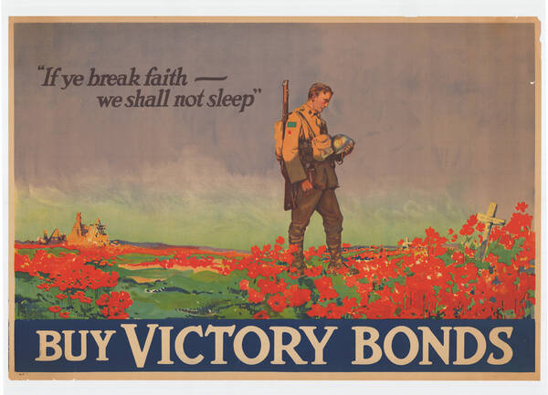 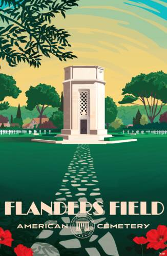
The popularity of the poem led to its use on recruiting posters and ads for war bonds.
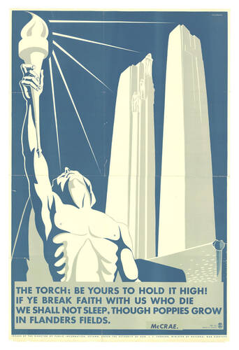
Ask your child(ren) to memorize the part of the last stanza in the recruiting poster above. For younger children, ask them to memorize just the first two lines of the first stanza.
time: 15 minutes
supplies: coloring map of Europe
Young Women of America, Attention! Here’s your chance to serve your country in France with General Pershing’s Expeditionary Forces!
While we call it World War I, it was primarily a European war fought between the Central Powers (Germany, Austria-Hungary, Bulgaria, and Turkey) and the Allies (France, United Kingdom, Belgium, Russia, Italy and the United States). Prior to World War II it was called the Great War or, in America sometimes, the European War. The “war to end all wars” began in 1914; the United States joined the Allies later in the conflict, in April of 1917. Our entry into the war is considered by historians as the first major turning point of the war, breaking the stalemate between the Central Powers and the Allies. When the armistice with Germany was declared in November of 1918, the United States had been at war for just over 18 months.
America fought on the 400+ miles of the Western Front, which stretched across France from the English channel to Switzerland. For this activity, print a map of pre-World War I Europe that your child(ren) can color (alternatively, you can ask them to do the activity below with this online map). Ask them to:
While these were the primary countries involved, many others were also pulled into the conflict, mostly on the Allied side: Serbia, Romania, Montenegro, Portugal, Greece, China, Japan, Brazil. In the wake of World War I and the defeat of the Central Powers, many new countries were formed (e.g., Poland, Yugoslavia, Latvia, Estonia, Lithuania) and the borders of others were changed significantly. This side-by-side comparison of European countries and borders before and after the war illustrates the extensive changes to Europe.
time: 15-20 minutes
prep: 5-10 minutes
supplies: construction paper, scissors, glue stick, crayons/markers, Uncle Sam coloring sheet
The world was at war, and General John J. Pershing, the commander of US troops across the Atlantic, was calling for female telephone operators to join the fight against Germany.
The origin of Uncle Sam as the personification of the United States goes way back in our history. He is based on a real person, Samuel Wilson, who owned a meat packing business. During the War of 1812, Wilson supplied food for American soldiers. The barrels had “U.S.” stamped on them for “United States” but soldiers knew Sam Wilson was supplying them, so they called it “Uncle Sam’s.” The political cartoonist Thomas Nast did much to shape our image of Uncle Sam in the 1870s. However, it was illustrator James Montgomery Flagg who was responsible for the most iconic image of Uncle Sam, portraying him in the famous “I Want YOU!” World War I army recruiting poster. Millions of these posters were distributed and displayed.
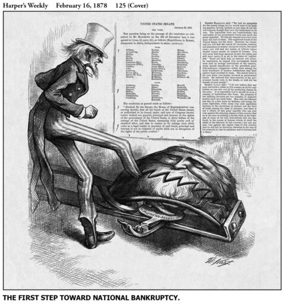 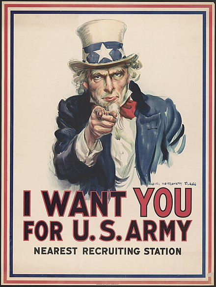 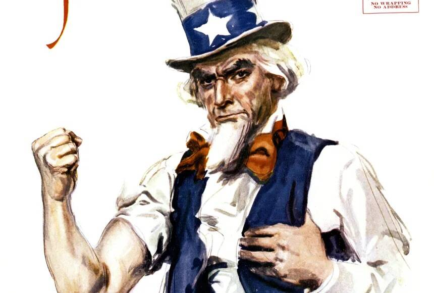
Now, it’s your turn to make your own Uncle Sam poster!
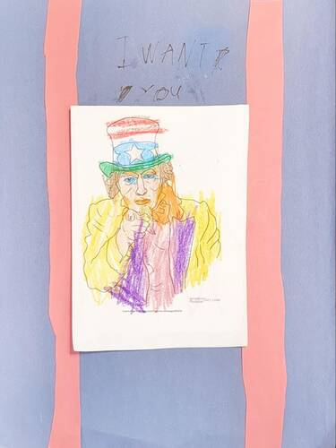
time: 15 minutes
The names of all the places here and further fronts beyond are known under code names. Waterfall Buster Bonehead Podunk Jam, etc., all mean some place very definite. The codes are changed frequently so I have to keep up on everything.
In addition to code names for different locations, the military developed a radio-telephone spelling alphabet that uses different code words for each letter of the alphabet. The primary purpose of the spelling alphabet is to clearly communicate over devices (radio or telephone) where sound quality can lead to mistakes. For example, the letters “F” and “S” can be easily confused but not “Foxtrot” and “Sierra.”
Spelling alphabets were first introduced during World War I. Over the years the code words were modified and standardized, and are now in use in many other applications outside the military: law enforcement, air traffic control, amateur radio, and more.
For this exercise, have your children learn to spell their own names using the modern radio-telephone spelling alphabet, reproduced below. For example, “Emily” would be spelled: Echo, Mike, India, Lima, Yankee.
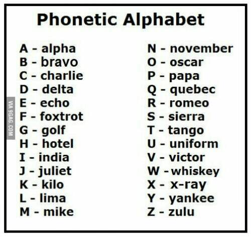
time: 15 minutes
Nothing could shake the Signal Corps Girls from their stations. Every new call could save lives. Any missed command could lose the battle.
The traditional game of “telephone” demonstrates how messages get muddled as they are whispered from person to person. The actual muddling can be hilarious – everyone enjoys comparing the final message to the original.
The rules are very simple:
The Telephone Game is more enjoyable when unusual words or phrases are used. For this version, consider having the parent start the first few words or phrases and incorporate vocabulary words or sentences from the story (e.g., “Grace and her girls had plenty of grit” or “Grace and her gritty girls worked like beavers.”)
Besides being a lot of fun, the game teaches listening skills, patience and taking turns, and the importance of accurate communications – “any missed command could lose the battle.”
time: 15-20 minutes
prep: 30-45 minutes
supplies: cardboard box, yarn
Grace’s Signal Corps Girls connected hundreds of orders in an hour, thousands of commands in a day.
For my older children, I wrote down a list of 10 pairs of holes (using the colors/numbers to identify them). We talked about rows and columns (rows go across, columns go up and down) so they could identify the correct holes. You can also make a table of coded locations from the story (e.g., Red 3 = Waterfall, Blue 2 = Bonehead, Green 1 = General Pershing’s HQ, Purple 4 = Podunk). Then, ask your children to make specific connections:
For my three-year-old, I simply had her match specific colors (“Can you put one end in red and one end in blue?”). We also had some colored yarn and then she just tried to match the yarn color to the hole color. For her, it was good fine motor skills practice as well as a chance to identify colors. My children all enjoyed being “Grace Banker.”
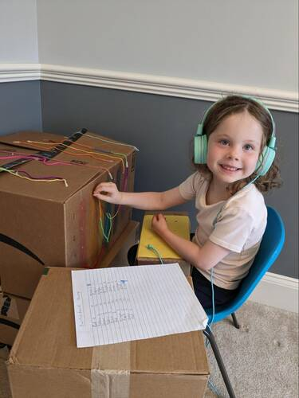 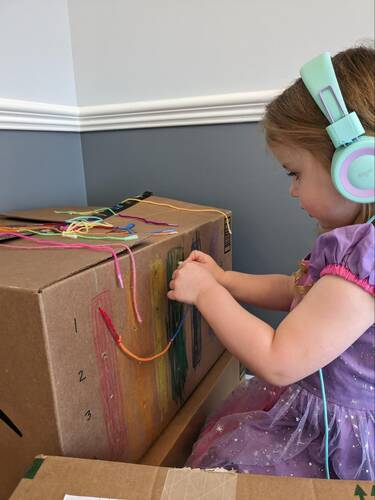
time: 15-20 minutes
freq: daily
supplies: pretend or real phone
When you said “Number Please” I couldn’t answer, there was a lump in my throat.
This is a great opportunity to discuss proper etiquette for phone calls and, in today’s world, video conferences and calls. If your family is anything like ours, when we call Grandpa and Nana all three grandchildren want to talk at once. Much has changed since the days when telephones were introduced into homes. But proper conversational etiquette remains unchanged and is a valuable skill for youngsters to learn.
For speaking on the phone, review and role play: identifying who you are, with whom you wish to speak and what you want, asking politely who is calling and what they want, how to deal with being put on hold, and politely ending a call.
Perhaps the hardest (and most important) skill for children to learn is waiting for their turn to speak – and not interrupting others when they are speaking (or listening!). This skill is needed when a parent is having a conversation with someone else on the phone. Explain to your child(ren) the need for them to be quiet, and wait patiently to talk to or get answers from the parent. Explain that they are only hearing half the conversation and so even when a parent is quiet, they still need to wait as their parent is listening to the other person on the line. Simulate this for them by asking them to talk to one parent while the other parent keeps asking the child questions.
For video calls and conferences, it can be even harder for children to wait for their turn to speak, especially when there are multiple children competing for attention. It may help to decide the order each child will speak ahead of time and set their expectations appropriately before the call starts. Explain how to ask politely about video or sound issues, not to make a lot of background noise when someone else is talking, and to say excuse me and wait for lulls in the conversation to raise new topics.
In general, discuss the polite back and forth of conversation - raising topics, asking and answering questions, waiting patiently for a turn to speak, listening quietly and attentively.
And then, practice these skills with your kids through role-playing phone and video calls to establish good habits. Once they are comfortable with the concepts of good conversational etiquette you can reinforce it during day-to-day conversations by praising them when done right or reminding them gently about proper etiquette.
time: 10 minutes
freq: daily
He who dwells in the shelter of the Most High will rest in the shadow of the Almighty.
Psalm 91 is known as the Soldier’s Psalm or the Soldier’s Prayer. Legend has it that in World War I the commanding officer of the 91st Brigade had the Psalm printed on cards and distributed to his troops. With its assurance of God’s protection in times of crisis for those who put their trust in Him, over time it has become a powerful source of inspiration and comfort to soldiers heading into battle. During the Iraq and Afghanistan wars, Operation Bandana distributed hundreds of thousands of bandanas to soldiers. The bandanas, in camouflage colors, had Psalm 91 written on them – a great example of Christian faith, generosity, and entrepreneurship in a single venture.
Below is Psalm 91 in full. Consider having your children memorize the first sentence or, for older children, the first two lines.
He who dwells in the shelter of the Most High will rest in the shadow of the Almighty. I will say of the Lord, “He is my refuge and my fortress, my God, in whom I trust.” Surely he will save you from the fowler’s snare and from the deadly pestilence. He will cover you with feathers, and under his wings you will find refuge; his faithfulness will be your shield and rampart. You will not fear the terror of night, nor the arrow that flies by day, nor the pestilence that stalks in the darkness, nor the plague that destroys at midday. A thousand may fall at your side, ten thousand at your right hand, but it will not come near you. You will only observe with your eyes and see the punishment of the wicked. If you make the Most High your dwelling— even the Lord, who is my refuge— then no harm will befall you, no disaster will come near your tent. For he will command his angels concerning you to guard you in all your ways; they will lift you up in their hands, so that you will not strike your foot against a stone. You will tread upon the lion and the cobra; you will trample the great lion and the serpent. “Because he loves me,” says the Lord, “I will rescue him; I will protect him, for he acknowledges my name. He will call upon me, and I will answer him; I will be with him in trouble, I will deliver him and honor him. With long life will I satisfy him and show him my salvation.”
time: 30-45 minutes
prep: 30-45 minutes
supplies: flour, butter, vinegar, milk, brown sugar, currants or raisins, cocoa, baking soda, nutmeg, ginger, lemon rind
When she was off duty Grace was the life of the party! There were villages to explore, dances to enjoy, dinners to share, and pranks to pull.
Civilians would send things to their loved ones who were at war in the trenches. Besides letters, some people sent trench cakes to soldiers in the trenches (this seems to be primarily something done by those in Europe). Trench cakes are a dense cake, but tasty! We have adapted a European recipe below.
time: 15-20 minutes
Soon, Moina was surrounded by men wanting poppies of their own – to honor their buddies “sleeping” now among the poppies of Flanders Fields.
Author Barbara Elizabeth Walsh tells the inspirational story of Moina Belle Michael and the volunteer work she did to support American soldiers leaving to fight in World War I. “She delivered books, magazines, and candy to their camps nearby. She and friends invited soldiers home for dinner… But Moina needed to do even more.” Each page chronicles Moina’s next step as she decides what “even more” means to her. Her lasting legacy is the red poppy, worn to honor not only the fallen but all veterans who served America. “During the weeks before Memorial Day and Veterans Day, veterans stand outside stores and distribute poppies, raising millions of dollars for other veterans and their families.” From America, wearing poppies in remembrance spread through all the Allied countries of World War I.
And if you ask your child(ren) to flip to the “Afterword” pages of Grace Banker and Her Hello Girls Answer the Call you can see red poppies strewn among Grace’s mementoes of World War I.
time: 20-30 minutes
prep: 10-15 minutes
supplies: egg carton, scissors, black tissue paper, red paint, paint brushes, glue, hole punch, ribbons or string
Still … Moina needed to do even more. She would not stop until every American wore a poppy to remember the soldiers. Always.
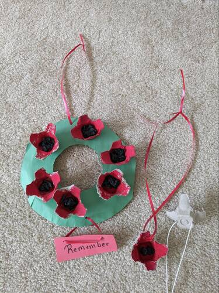
See also: Egg Carton Poppies for Remembrance Day at Happy Hooligans.
time: 10-20 minutes
supplies: paper, crayons/markers
Grace and her girls had plenty of grit. They kept their cool outside Liverpool when their ship, the perfect target for a German submarine attack, was stuck on a sandbar.
Camouflage is the use of artistic patterns to hide an object, person, or animal. World War I introduced many innovations to warfare (submarines, tanks, telephones). Among these innovations was “dazzle camouflage” to conceal ships. Every ship had a unique dazzle camouflage pattern so that enemies could not identify the type of a ship by its camouflage pattern. (Ask your child(ren) to compare the camouflage pattern of the ship Grace departs on and the one she returns on? Are they the same? Is it likely that she returned on the same ship she left on?)
There are also various dazzle camouflage coloring sheets available online. In nature, some animals use dazzle camouflage. Among these are leopards, jaguars, giraffes, and zebras. For this activity, ask your child(ren) to draw either an object with a unique camouflage pattern or an animal. For fun, they could camouflage an animal that doesn’t normally use dazzle camouflage, like an elephant or rhinoceros.
time: 10 minutes
At the eleventh hour, on the eleventh day, of the eleventh month, an armistice was signed to end the war.
This story has more unfamiliar vocabulary words than most of our AHEP recommended books. We’ve selected a subset that we think will help the young reader better understand the story. After reviewing the vocabulary with your listeners, ask them to ask questions about any words that are still unfamiliar or confusing to them. Read the sentences before and after the sentence containing the word they are asking about to see if they can guess part of the meaning from the context.